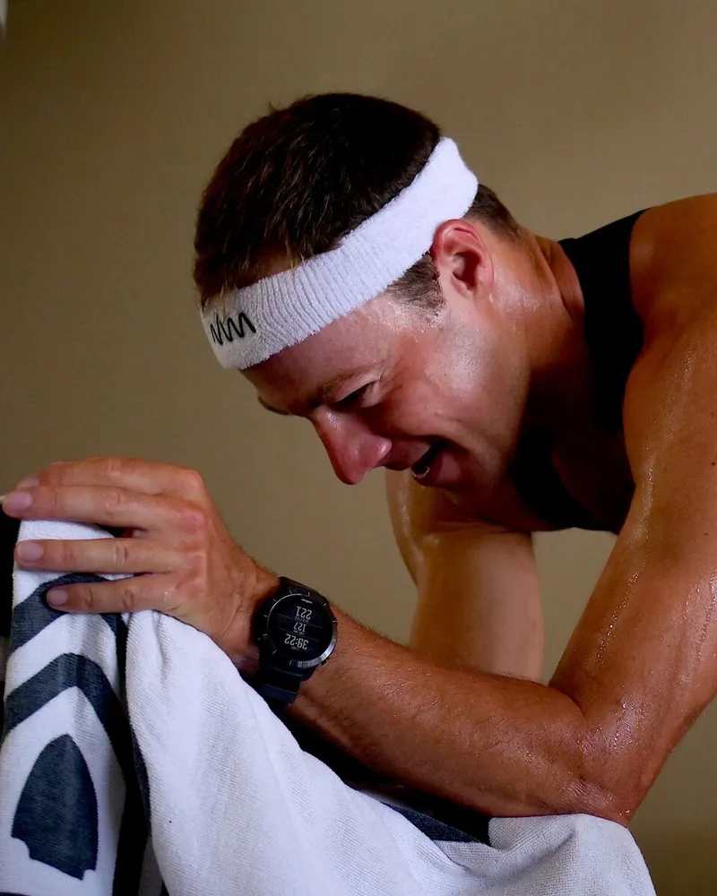

GroundApp
Box breathing: 4 in, 4 hold, 4 out, 4 hold.
From the mind into the body. Breathwork by Collin Chartier.
Download on the App Store
Free to download.
Premium $29.99/year.

Box breathing: 4 in, 4 hold, 4 out, 4 hold.
From the mind into the body. Breathwork by Collin Chartier.
Free to download.
Premium $29.99/year.